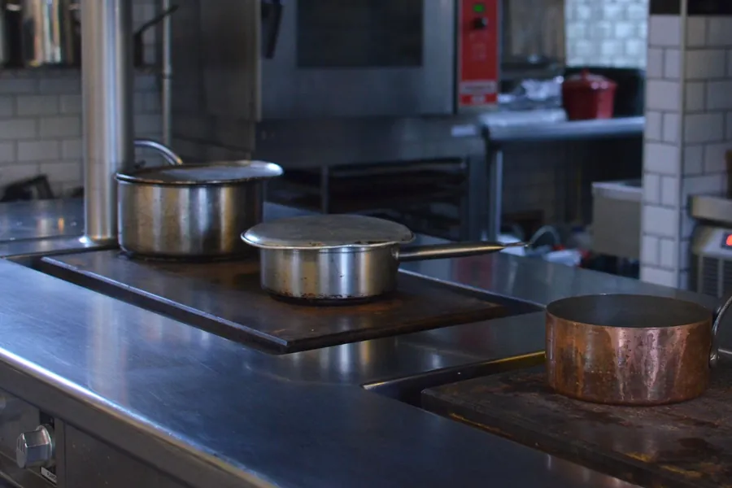
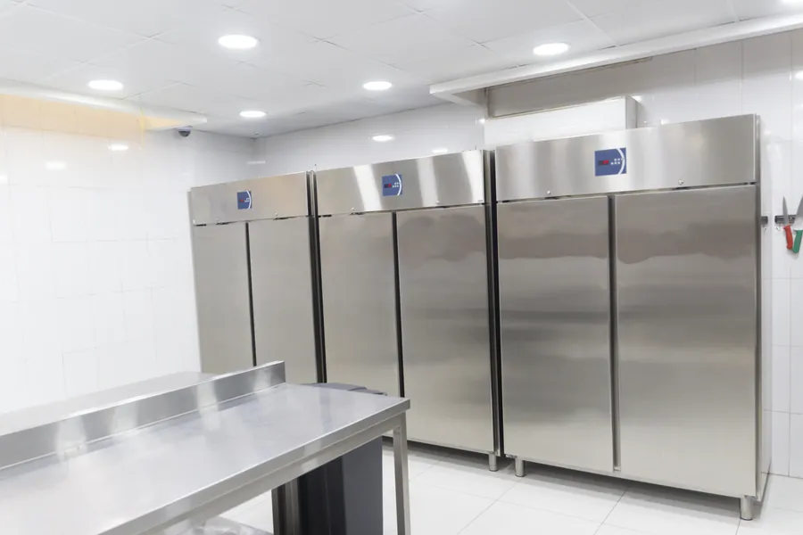
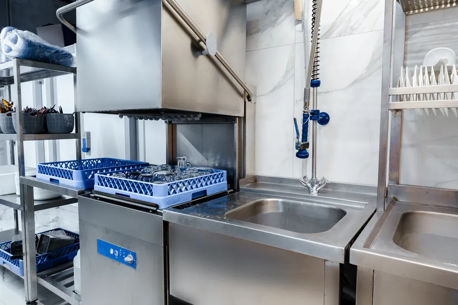
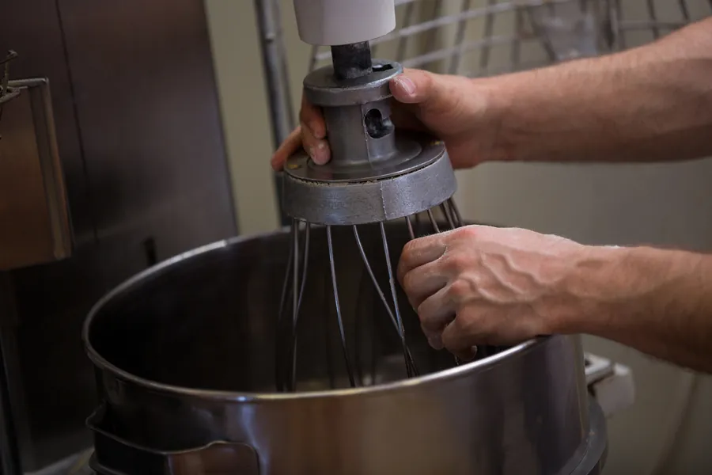
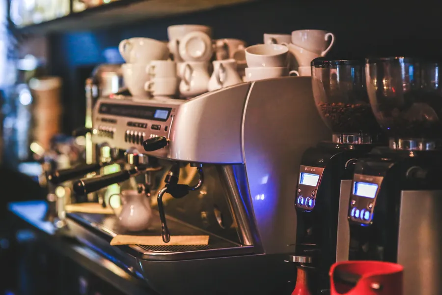
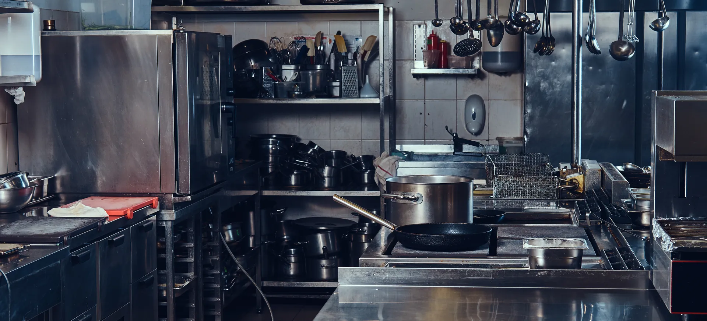
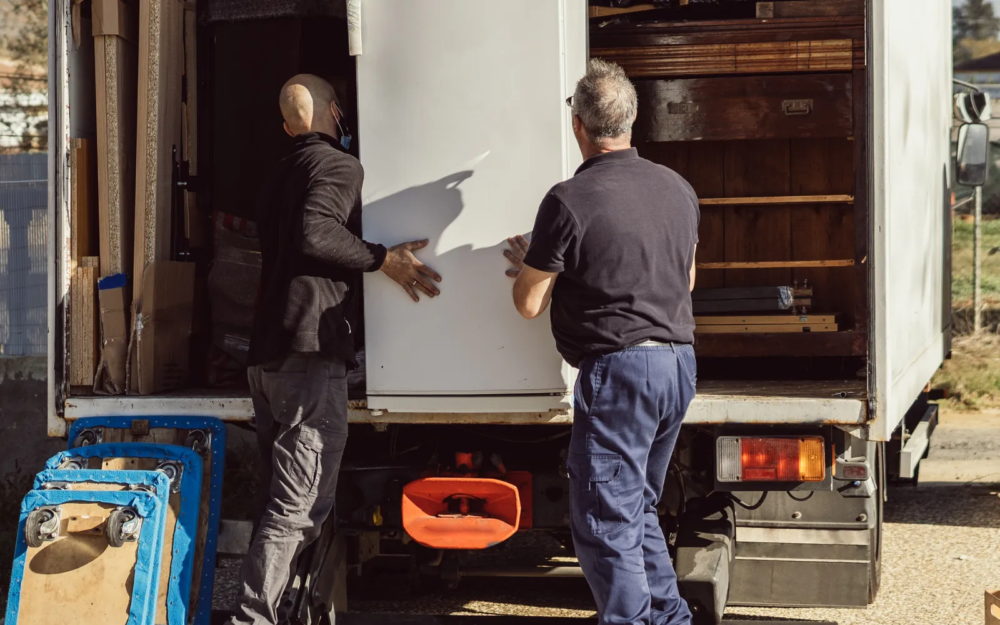
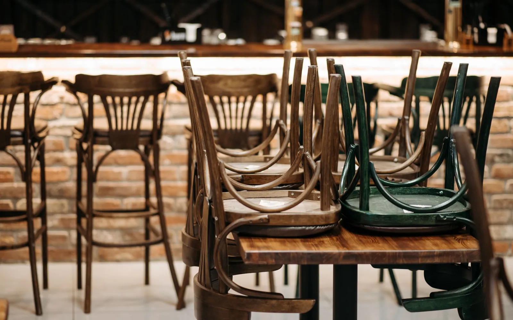

Commercial kitchen, bar and catering equipment
Universal Auctions Group runs trade-only catering equipment auctions online for commercial kitchen, restaurant, pub, hotel and bar equipment located across the UK. Trade buyers bid from anywhere in the UK or overseas, and the equipment stays at the premises until it is sold and paid for.
Buying
Cooking lines, refrigeration, warewashing, prep and bar equipment
Sold in trade-only timed online auctions. Registration is free and you bid from the office, the pass or your phone.
Selling
For restaurant, pub and hotel operators, refitters, dealers and administrators
Equipment is sold from the venue to trade buyers across the UK and overseas, with a record of the sale for your file.
Anything from a single appliance to the full contents of a kitchen dismantled for sale. These are the categories buyers watch for.

Cooking equipmentCombi, convection and deck ovens, ranges, grills, fryers, induction and gas equipment, hot cupboards and bain-maries.
Refrigeration and cold roomsUpright and counter fridges and freezers, display chillers, blast chillers, walk-in cold rooms and ice machines.
WarewashingPass-through and undercounter dishwashers, glasswashers and pot washers.
Preparation and stainlessMixers, slicers, food preparation machines, stainless benching, sinks, shelving and gantries.
Coffee and front of houseEspresso machines, water boilers, display counters and service equipment from cafes, restaurants and hotels.Kitchens and bars from closing businesses also come up in our liquidation and insolvency auctions.
Restaurant closures and lease exits, pub disposals, hotel kitchen and bar refits, dark kitchen wind-downs, contract catering changes, dealers and insolvency sales.
That mix means one sale can carry a single appliance from a refit beside the whole kitchen of a closed restaurant.
Where the seller supplies them, listings include the make, model, dimensions, electrical phase and gas type, along with photographs and any known issues.

For trade buyers
Because commercial equipment comes up in quantity, the price is set by open bidding, and a kitchen can be fitted out from one sale.
A whole kitchen in one sale
When a venue closes, its cooking line, refrigeration, warewashing and benching can sell as lots in the same auction, so you fit out from one place.
The price is set by the bidding
Every lot is open to every registered trade buyer, and you can see the bidding as it happens. There is no asking price to negotiate.
Every size of operation
From a single fridge for a cafe to a full line for a new site, the lots cover every size of kitchen and bar.
Trade-only, online, from anywhere
You bid against other businesses, between services or after close, wherever the equipment happens to be.
Four steps, from registering to collecting what you have won.
Register to bid
Registration is free. Manual approval and identification may be required before an account can bid, so register ahead of the sale you are watching.
Read the lot and set your maximum
Each lot carries the seller's description and photographs, with make, model, dimensions and power or gas type where supplied, its VAT treatment, and the buyer's premium on its Additional Fees tab. Add them up and decide your ceiling before the lot closes.
Bid in the timed online auction
Bidding normally remains open for several days, with the exact opening and closing times stated for each auction. In our current timed-auction format, a bid in the last ten minutes extends that lot by ten minutes, so nobody wins on the buzzer.
Pay and collect
We invoice you after the sale, payable in full by bank transfer within 24 hours. Once your payment clears we release the collection details, and you collect from the stated location by appointment.
The full buying process, costs and collection are on the buying page.
Before you bid
Catering equipment is often still installed when it sells. Price the removal and the engineer's visit into your bid alongside the hammer price.
Check the dimensions against your doors, stairs and lifts, and the power, gas, water and drainage each item needs at your site. Gas appliances need a Gas Safe registered engineer to disconnect and reconnect them, and refrigeration may need a specialist to remove it safely. Plan the electrical and safety checks appropriate to each item before it goes back into commercial use.
Collection is by appointment after cleared payment, and the buyer arranges the labour and lifting. Buyers are responsible for arranging collection and transport. Any delivery option specifically stated within a lot is provided by the seller and subject to separate agreement.


For sellers
We run online sales for restaurant, pub and hotel operators, landlords, refitters, dealers and administrators, and every lot is open to trade buyers across the UK and overseas.
Sold from the venue
The equipment stays where it is. Buyers collect by appointment once they have paid, so nothing has to be moved to an auction site first.
Paid before anything leaves
Collection is authorised only after the buyer has paid, and the seller is ordinarily paid within 24 hours of our receiving cleared funds.
A record for the file
Lot-by-lot results and the marketing and bidding record of the sale, within what confidentiality and data protection allow.
How a sale is set up, and what it costs, are on our pages for sellers: why sell with us, how selling works and asset disposal for administrators and receivers.
The questions buyers and sellers ask before their first catering sale. For anything else, get in touch.
A sale of commercial kitchen, bar and catering equipment by open bidding. At Universal Auctions Group these run as trade-only timed online auctions, so registered business buyers bid remotely and the highest bid at the close wins the lot.
Not as standard. Any service, testing or working-status information is supplied by the seller and shown in the lot description where available. Treat each item as needing the checks appropriate to its type, and have gas appliances connected and commissioned by a Gas Safe registered engineer.
Yes, where a venue's equipment is offered in the same auction you can bid on as many lots as you need. Each lot is a separate bid, so set a maximum for each, and check the collection details for the site.
Any business that registers to bid. All our auctions are trade-only, so you register and bid in a business capacity. Overseas trade buyers are welcome to participate. Manual approval and identification may be required before an account can bid.
The buyer's premium, at the rate shown on the lot's Additional Fees tab, and VAT where it applies to that lot, which the lot description states. Collection and transport are yours to arrange, so allow for them in your maximum bid.
Payment is due in full by bank transfer within 24 hours of the invoice. Collection is by appointment once your payment has cleared, within the period stated in that sale's terms. Equipment may still be installed, so confirm access and disconnection before you bid.
Yes. We run sales for restaurant, pub and hotel operators, landlords, refitters, dealers and administrators, from a single appliance to a full kitchen and bar. The equipment is sold from the venue and buyers collect after paying. Talk to us about what you have and your timetable.
Lots are sold as seen, where lying. Descriptions and photographs come from the seller, so form your own view of each item, and ask us for anything else you need while the lot is still open.
For buyers
For sellers
Register now and you will be approved and ready before the equipment you need comes up.
Looking for something else? Browse by category:
Selling a kitchen, a bar or a single appliance? Talk to us about a sale.
Every sale is governed by the auction terms and conditions.